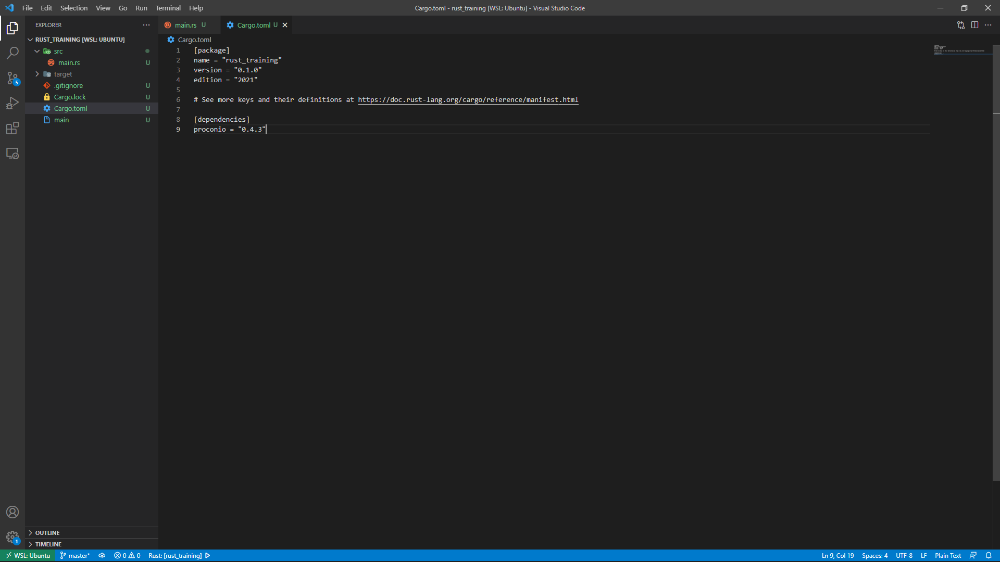

標準ライブラリを使う場合、少々面倒な書き方をしなければなりません。
以下は文字列の入力を受け取る場合のコードです。
ターミナルやコンソールからの入力は文字列なので、それを格納するための変数を宣言します。 そして「std::io...」の部分で入力をおこなっています。 これは文字列の入力でしたが、数値を入力したい場合はどうでしょう。
数値の入力でも、ターミナルからの入力は文字列なので、それを一度数値に変換する作業が必要になります。
(#｀-_ゝ-)
入力があるたびにこの作業をおこなうのは、正直かなり面倒です。 そこで、「proconio」という入力をサポートするライブラリを導入します。
導入は簡単です。
target内にあるCargo.tomlの[dependencies]に次のように追加するだけです。
proconio = "0.4.3"
あとは、ソースコード内でproconioを使用することを宣言しましょう。
尚、型を明記しないとエラーとなるので注意しましょう。